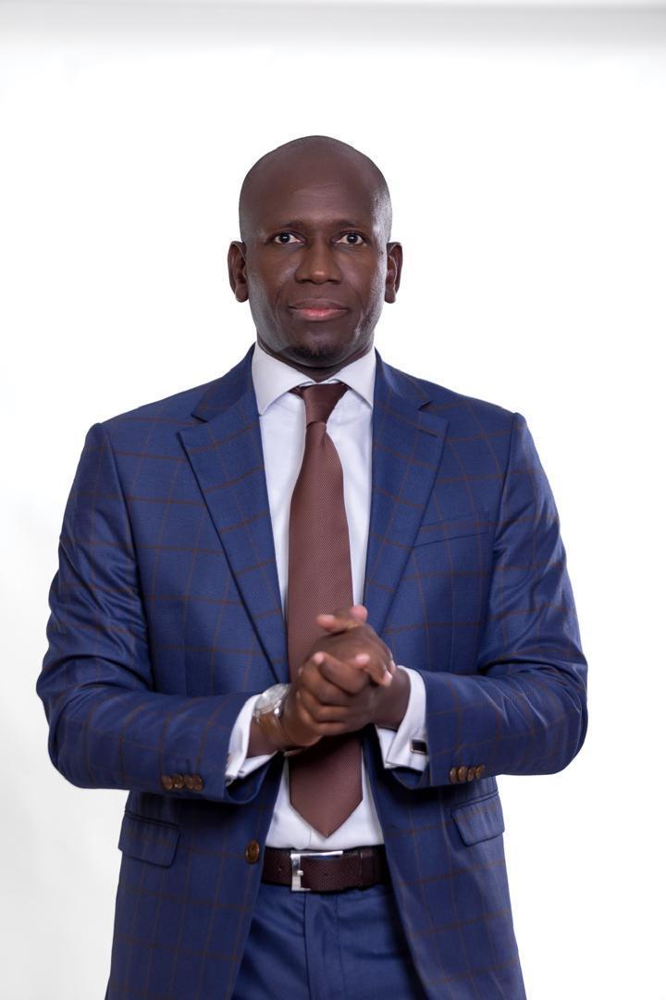

Le projet local
Travailler sur les réalités concrètes de Diama, au plus près des villages, quartiers et habitants.
Le Projet
Rassembler les forces vives de la commune, écouter les besoins du terrain et transformer les potentialités locales en opportunités concrètes.

ConcepteurLe concepteur
📍 Né et ayant grandi à Taba Treich dans la commune de Diama (Saint-Louis, Sénégal).
Il a connu une enfance marquée par les difficultés, les sacrifices et une profonde importance accordée à l'éducation. Son parcours l'a ensuite conduit à développer une expérience entrepreneuriale fondée sur la débrouillardise, le travail, la confiance et la persévérance.
La foi et la persévérance occupent également une place centrale dans son parcours. Elles constituent des repères essentiels pour surmonter les difficultés, rester déterminé et conserver une vision à long terme.
Cette trajectoire nourrit aujourd'hui sa volonté de transformer son expérience en engagement au service de Diama : rassembler les forces vives de la commune, écouter les besoins du terrain et mettre les talents et les ressources locales au service d'un développement partagé.
Une trajectoire
Cette trajectoire personnelle nourrit aujourd'hui une volonté d'action au service de Diama, de ses habitants et d'un développement partagé.
Notre positionnement
Diama Bu Bess agit à l'échelle de la commune, au plus près des habitants, tout en inscrivant son action dans une ambition plus large.
Travailler sur les réalités concrètes de Diama, au plus près des villages, quartiers et habitants.
KIIRAAY – Les Patriotes Républicains constitue le cadre politique national de cette dynamique.
Traduire localement les principes de proximité, responsabilité, éthique, transparence et développement.
Notre conviction
Pour Diama Bu Bess, la transformation du Sénégal doit également se concrétiser dans les territoires. Le Sénégal nouveau doit aussi se construire à Diama, au plus près des populations et de leurs aspirations.
Faire de Diama une commune où la jeunesse, les femmes, l'agriculture, l'éducation, la santé, l'emploi, les infrastructures et le cadre de vie constituent de véritables priorités.
Nos principes
Des repères simples pour construire une action locale responsable, proche et durable.
Placer la commune et ses habitants au-dessus des intérêts particuliers.
Partir des réalités des villages et des quartiers pour construire les priorités.
Promouvoir une gestion responsable et compréhensible des affaires publiques.
Associer jeunes, femmes, agriculteurs, éleveurs, entrepreneurs, associations et diaspora.
Transformer les potentialités de Diama en opportunités pour l'emploi et les services.
Construire un projet commun au-delà des divisions et des intérêts particuliers.